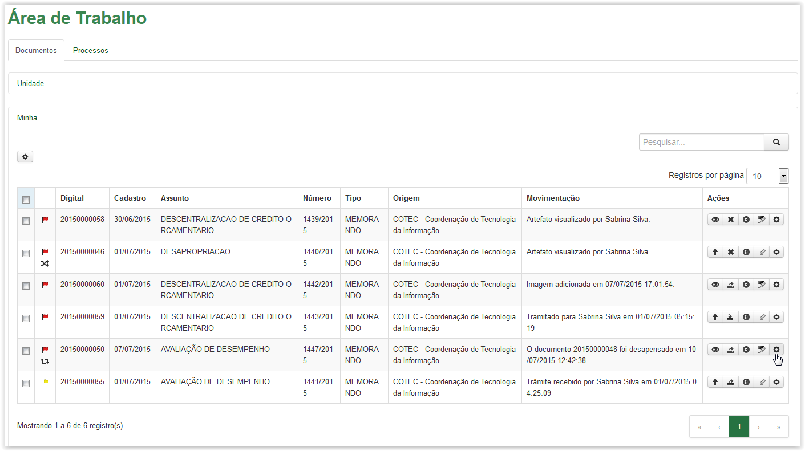
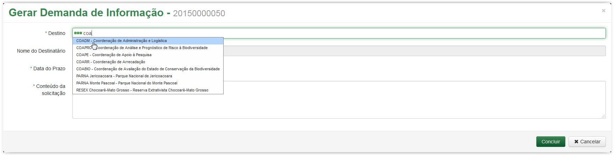
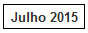
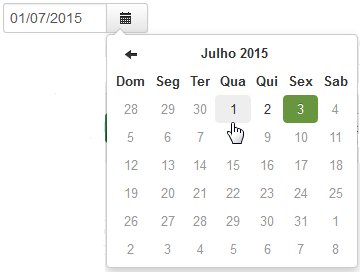

Demanda de Informação
Para gerar uma demanda de informação, clique no ícone disponível na coluna Ações da Área de Trabalho. Esse ícone está disponível tanto na aba de Documentos quanto na aba de Processos:

Aba Documentos - Ícone opções
Aba Processos - Ícone opções
Após clicar no ícone o sistema apresenta uma lista com algumas opções. Selecione a opção Demandar Informação:
Aba Documentos - Selecionando a opção Demandar Informação
Aba Processos - Selecionando a opção Demandar Informação
A tela Gerar Demanda de Informação é exibida apresentando em seu título o número do artefato (documento ou processo) selecionado (Veja Nota 1):
Tela Gerar Demanda de Informação
Informações para Gerar Demanda de Informação:
Destino: |
Para onde se destina a demanda. |
Nome do Destinatário: |
Nome de quem receberá a demanda gerada. O campo terá a apresentação de relação direta ao Destinatário informado no campo anterior. |
Data do Prazo: |
Data limite para que seja gerada a resposta da demanda. |
Conteúdo da solicitação: |
Texto de orientação da necessidade pelo qual foi gerada a demanda. |
 Preenchendo a demanda de informação!!
Preenchendo a demanda de informação!!

Selecionando uma Unidade na lista para preencher campo Destino
Selecionando um destinatário na lista para preencher campo Nome do Destinatário
No entanto, se o campo Nome do Destinatário não for preenchido, o sistema encaminhará a demanda para a Unidade informada no campo Destino.
 é apresentado um calendário para o preenchimento do campo (Veja Nota 2):
é apresentado um calendário para o preenchimento do campo (Veja Nota 2):Selecionando o ícone Calendário
Selecionando a data para preenchimento do campo Data do Prazo
Preenchendo o campo Conteúdo da solicitação
 , caso desista de gerar a demanda, e o sistema retornará para Área de Trabalho. Senão, clique no botão e será apresentada a tela abaixo:
, caso desista de gerar a demanda, e o sistema retornará para Área de Trabalho. Senão, clique no botão e será apresentada a tela abaixo:Tela Demanda de Informação
A partir da tela Demanda de Informação é possível acompanhar as demandas que foram geradas. Veja o link Acompanhar Demanda de Informação.
IMPORTANTE!!
 Nota 1:
Nota 1:
Os campos obrigatórios são indicados pelo sinal de asterisco (*) na cor verde ao lado do nome. Quando algum ou nenhum campo obrigatório for preenchido, o sistema apresenta uma mensagem de erro: "Campos de preenchimento obrigatório não foram preenchidos.".
Comportamento da tela Gerar Demanda de Informação após clicar no botão Concluir sem preencher os campos obrigatórios.
 Nota 2:
Nota 2:
Nos campos de Data, ao clicar no ícone  o sistema apresenta um calendário:
o sistema apresenta um calendário:

Calendário
O calendário é exibido apresentando o mês e ano atuais , além do dia corrente  . Utilize as setinhas
. Utilize as setinhas  para navegar entre os meses (anteriores e posteriores) e clique no dia desejado para que o campo de data seja preenchido:
para navegar entre os meses (anteriores e posteriores) e clique no dia desejado para que o campo de data seja preenchido:

Preenchimento do campo de Data
Created with the Personal Edition of HelpNDoc: Write eBooks for the Kindle